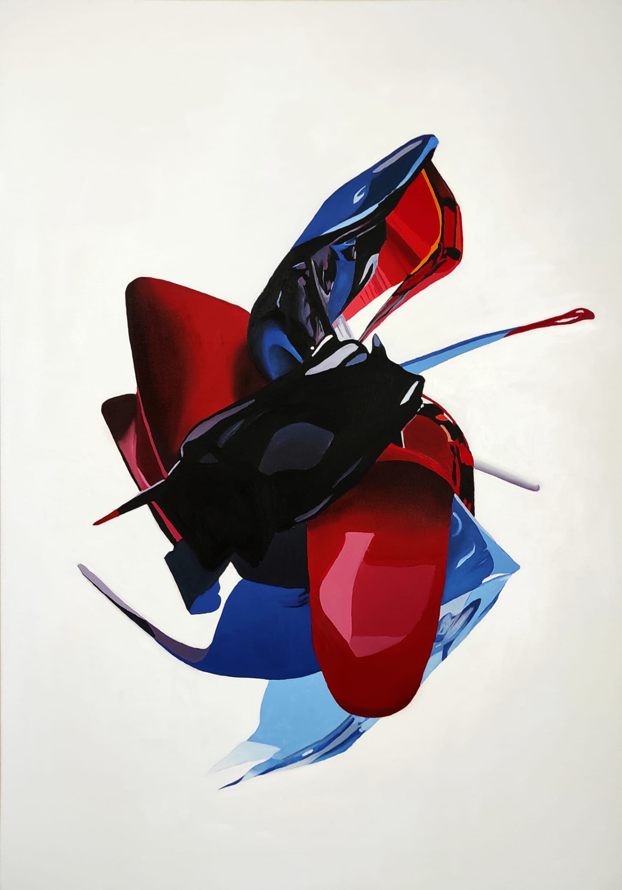

Kent ve mimari, bu çalışmanın başlangıç noktasıdır. Sanatçı, kendi yağlıboya resimlerini bir veri seti olarak kullanarak image-to-image süreciyle yeni görüntüler üretmiş; ardından bu dijital çıktıyı yeniden fiziksel tuvale aktarmıştır. Ortaya çıkan görüntü, katmanlaşma ve hibritleşme yoluyla bir yön kaybı deneyimi yaratır: ne tamamen insan eli ne de tamamen makine ürünü olan bir alan.
Synthetic Disharmony, iki üretim biçiminin uyumsuzluğunu kucaklar. Bu uyumsuzluk bir sorun değil, eserin kendisidir.
The city and architecture serve as the starting point of this work. The artist used his own oil paintings as a dataset to generate new images through an image-to-image process, subsequently transferring these digital outputs back onto physical canvas. The resulting image creates an experience of disorientation through layering and hybridization: a space that is neither entirely the product of the human hand nor entirely machine-generated.
Synthetic Disharmony embraces the dissonance between two modes of production. This dissonance is not a problem — it is the work itself.
Yapay zeka bu çalışmada doğrudan bir sonuç üreticisi değil, sürecin bir parçasıydı. Fiziksel resimler önce dijital veriye dönüştürüldü; ardından image-to-image yöntemiyle çok sayıda çıktı üretildi ve bunların büyük çoğunluğu elendi. Eleme ve yönlendirme tamamen sanatçıya aitti. Yapay zekanın hatalarından ve açıklarından yararlanıldı; nihai görüntü bu sürecin bir artığı olarak ortaya çıktı ve yeniden fiziksel tuvale aktarıldı.
In this work, AI was not a direct producer of results, but a part of the process. Physical paintings were first converted into digital data; then, through the image-to-image method, numerous outputs were generated — the vast majority of which were discarded. The selection and direction remained entirely the artist's. The errors and gaps of artificial intelligence were deliberately exploited; the final image emerged as a residue of this process and was subsequently transferred back onto physical canvas.